Hệ thống Quản lý Nhân sự (HRM) — Trung tâm Ngoại ngữ Bình An
Phân rã toàn bộ nghiệp vụ HRM Bình An thành 6 phân hệ cốt lõi mức 1 và 20 chức năng thành phần mức 2.

Mô tả ranh giới hệ thống và các luồng thông tin vào/ra với 4 tác nhân: Quản trị viên, HR Manager, Trưởng nhóm và Nhân viên.

Phân rã tiến trình 0.0 thành 6 tiến trình chính (1.0 đến 6.0) cùng 5 kho dữ liệu trung tâm D1 đến D5.

Chi tiết hóa các tiến trình con 2.1 (Phòng ban/chức vụ), 2.2 (Hồ sơ nhân viên), 2.3 (Hợp đồng lao động & Đội nhóm) và 2.4 (Cập nhật thông tin cá nhân).

Chi tiết hóa các tiến trình con 3.1 (Tiếp nhận & Kiểm tra đơn), 3.2 (Thẩm định & Phê duyệt / Từ chối) và 3.3 (Hủy đơn khi còn PENDING).

Chi tiết hóa các tiến trình con 4.1 (Thiết lập ca & Phân lịch làm việc), 4.2 (Ghi nhận Check-in / Check-out) và 4.3 (Tổng hợp giờ công & Làm thêm OT).

Chi tiết hóa các tiến trình con 5.1 (Khởi tạo kỳ lương & Thu thập dữ liệu), 5.2 (Tự động tính toán bảng lương chi tiết) và 5.3 (Khóa kỳ lương & Phát hành phiếu lương).
